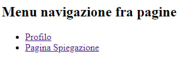
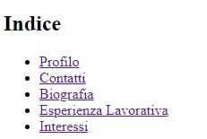

Spiegazione pagine!
Nagivazione fra pagine!

Screenshot menu di navigazione fra pagine
Abbiamo un menu con 2 opzioni :
- Profilo
- cliccando verrai portato al mio profilo
- Pagina spiegazione
- cliccando verrai portato a questa pagina
Nagivazione con l'indice

Screenshot menu di navigazione con l'indice
Grazie a questo Indice è possibile essere rindirizzato ai vari elementi della pagina profilo.
Contatti!
Screenshot menu di navigazione contatti
Questo permette di mostrare i miei contatti contattatmi.